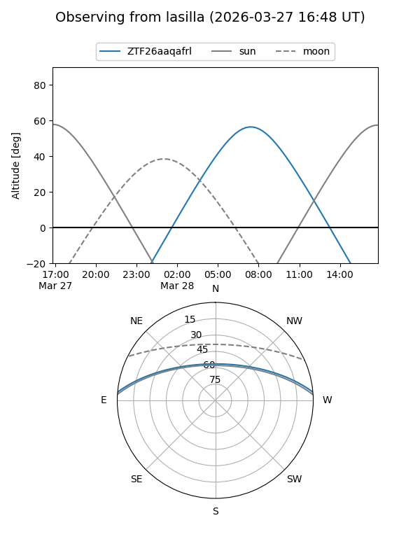
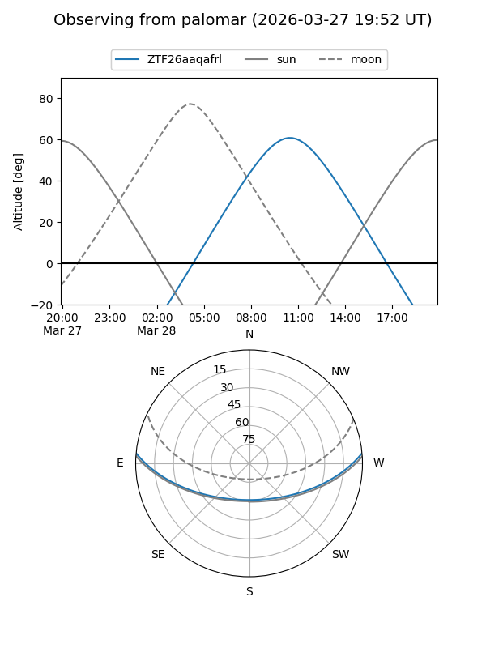

ZTF26aaqafrl
Target ZTF26aaqafrl at 2026-03-28 12:40
Aliases and brokers:
FINK: link
Lasair: link
ALeRCE: link
alt names
ZTF26aaqafrl (ztf,fink_ztf)
Coordinates:
equatorial (ra, dec) = 225.9405,+4.35852
equatorial (HMS+DMS) = 15:03:45.72,+04:21:30.68
galactic (l, b) = (3.0025,+51.09766)
Flags:
Photometry:
last ztfg=19.22
1 ztfg detections
Lightcurve
Visibility


Additional plots